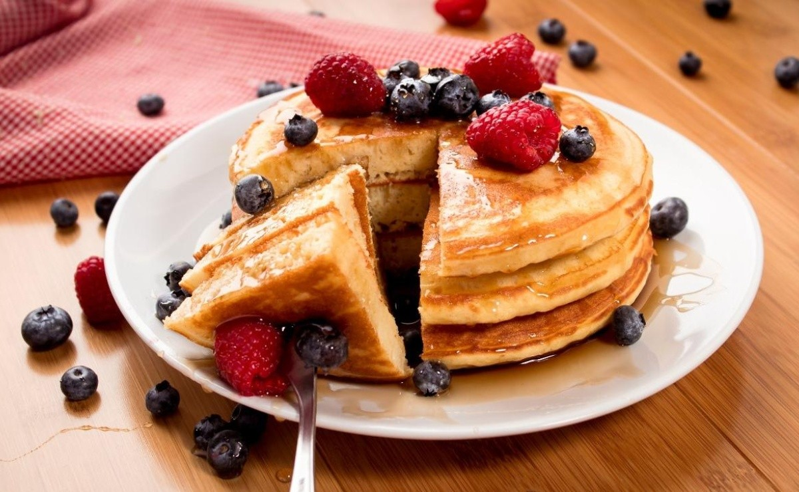
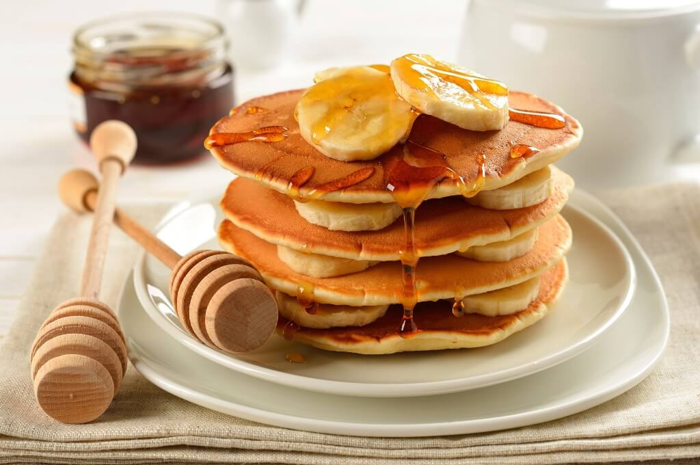

🥞Pancakes Recipe🥞

Description
Pancakes are super easy to make and are a recipe for beginners. Also known as American pancakes, hotcakes, pancakes or pancakes, pancakes are a delight that can be eaten with sweet or savory at any time of the day. In this way, if you wonder how to prepare pancakes the answer is simple, with whatever you want!
Homemade pancakes are an excellent option to prepare all kinds of dishes, as they serve to make cannelloni, to make pies or to eat them with a little honey. Learn how to make homemade pancakes in less than you think with Odin Recipes and enjoy a simple and delicious dish.
Ingredients
- 1 cup of self-rising flour or pastry flour
- 1 egg
- 1 splash of olive oil
- ¾ cup of milk (180 milliliters)
Utensils
- Pancake molds
- Silicone spatula
- Pan (optional)
- Bowl

Steps
- First, gather all the ingredients. If you don’t have self-rising or prepared flour, which is wheat flour that already includes yeast (also called pastry flour), you can use regular wheat flour and add a teaspoon of baking powder.
- Place the flour in a bowl and add the egg and milk. Mix well until these ingredients are integrated and there are almost no lumps.
- To finish making the dough for the homemade pancakes, add a splash of oil and mix well. You will see that the oil causes the flour lumps to dissolve and leaves a smooth and homogeneous dough.
- To make the pancakes, heat a pan over medium-low heat with a little oil or butter. When the pan is hot, add a spoonful of mixture and leave it on the fire until bubbles start to appear on the surface, then flip it and cook on the other side.
- To serve the super easy to make pancake recipe, add a little butter and honey and enjoy. If you want to eat them with something salty, you can serve them with bacon and fried eggs or a scrambled ham.